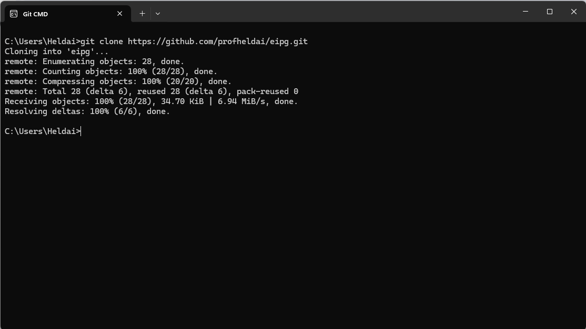

Usando o GIT para baixar o código fonte
- Digite "cd desktop <enter>" para ir à área de trabalho
- E, em seguida, copie e cole o comando a seguir:
git clone https://github.com/profheldai/eipg.git

Foi criado um diretório eipg contendo todos os códigos fonte das aulas